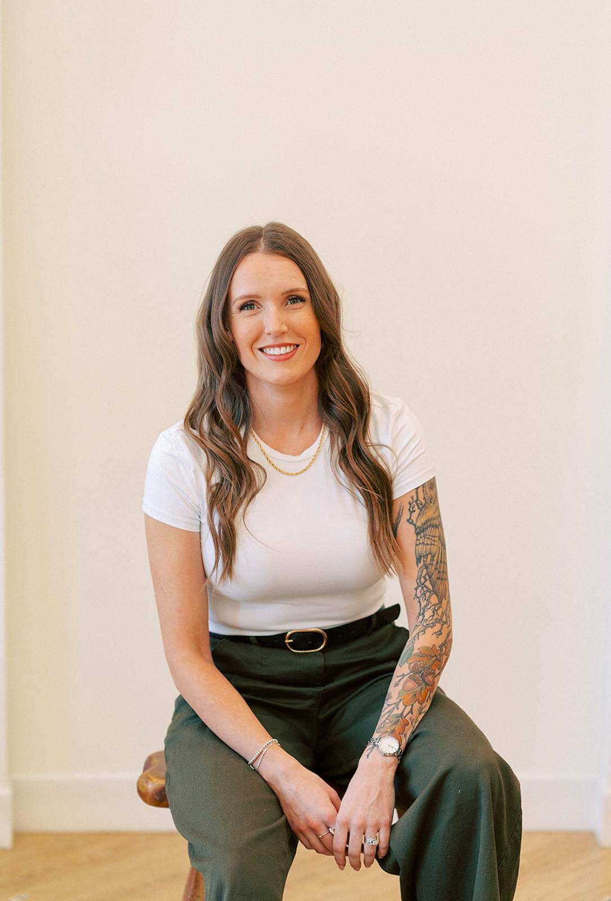
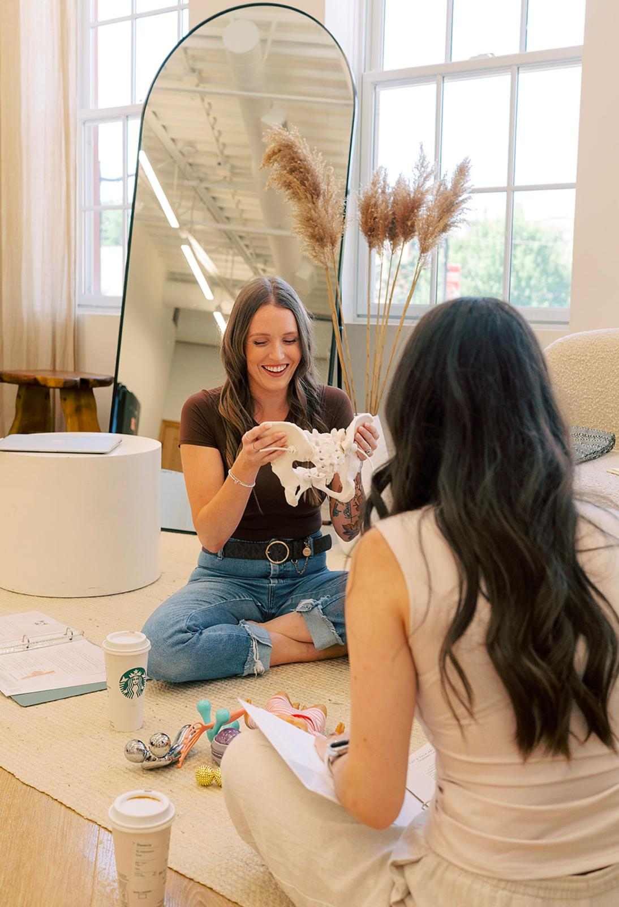
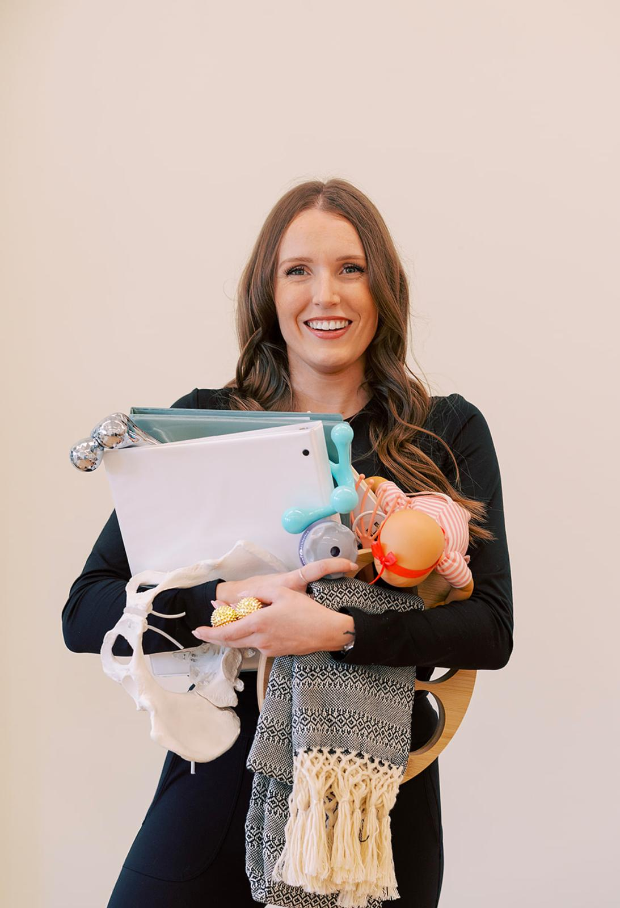
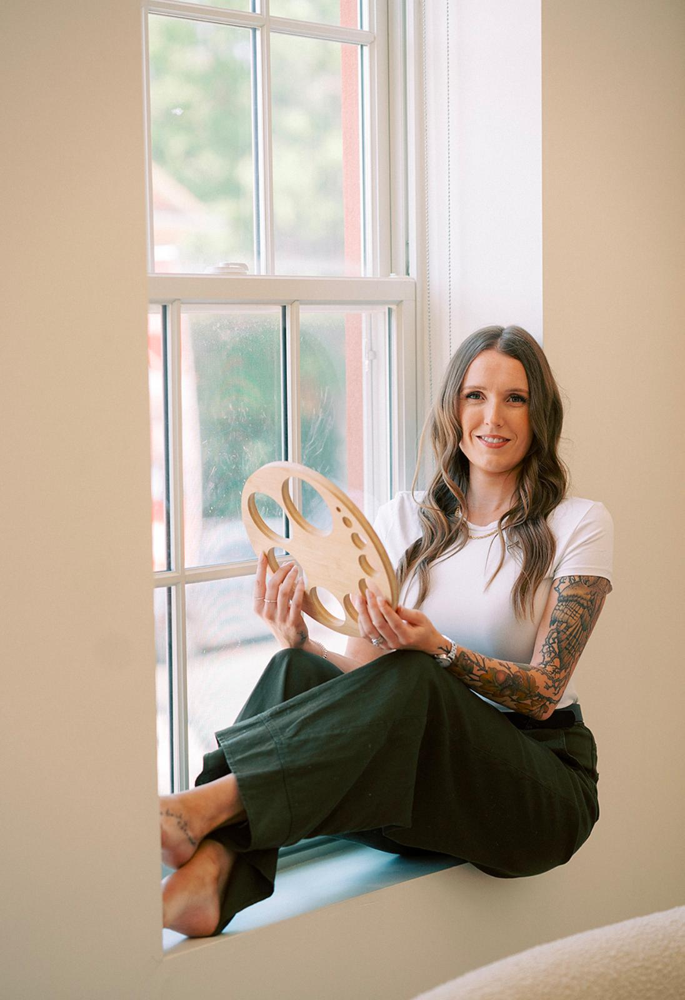
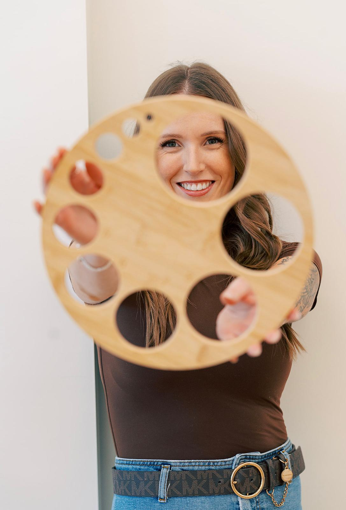
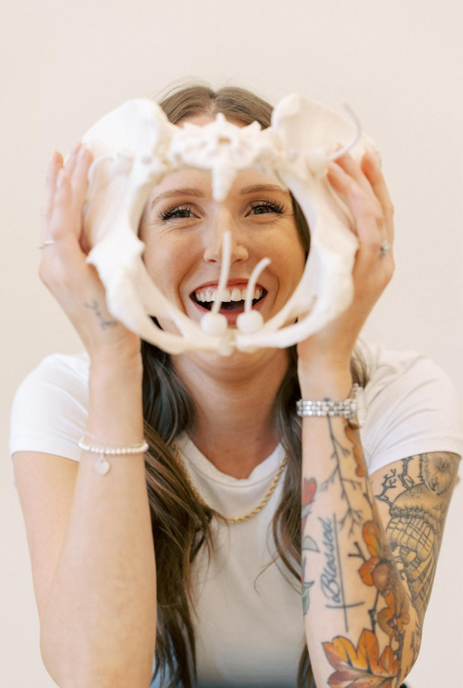
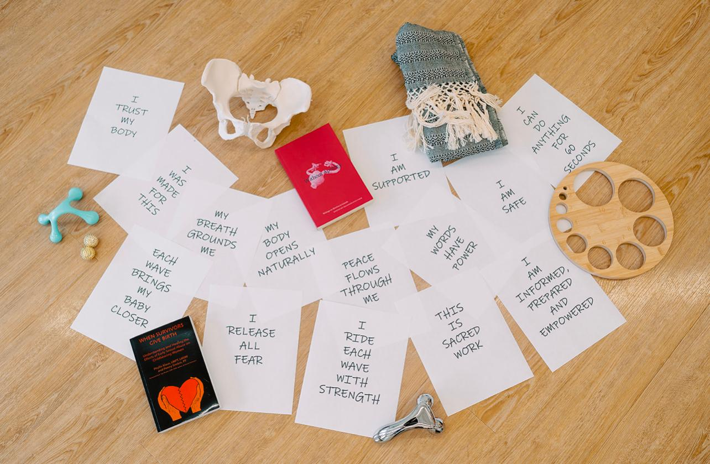

Compassionate, evidence-based support for you and your growing family.
Get in Touch
Welcome to Simply Sacred. I’m Danita — a wife, mama, and birth doula with a deep passion for supporting families through one of life’s most transformative seasons.
I believe every birth story is unique, powerful, and worthy of being held with compassion and respect. My role is to provide calming presence, emotional reassurance, evidence-based information, and hands-on support so you feel confident, informed, and never alone throughout your journey.
From pregnancy and birth preparation to the sacred moments after welcoming your baby, my heart is to create a space where you feel seen, heard, and empowered.
Birth is more than an experience — it is a life-changing moment for your entire family. It would be an honour to walk alongside you and help make your journey feel supported, peaceful, and truly sacred.
At Simply Sacred, my goal is to provide more than just birth support — I offer a steady presence, a listening ear, and a trusted guide throughout your journey into parenthood.
Each package is thoughtfully designed to provide personalized support during pregnancy, labour, birth, and the early postpartum days.

My prenatal package includes two private classes (2 hours each) designed to help you feel informed, prepared, and confident as you approach birth. We will discuss birth preferences, comfort measures, labour preparation, and tools to help you and your support person feel ready for the journey ahead.
For pricing and package details, please contact me.

Birth support begins with me going on-call around 37 weeks of pregnancy, meaning I am dedicated and available as you enter the final stretch of your journey. When labour begins, I provide continuous emotional, physical, and informational support to help you feel calm, supported, and empowered throughout your birth experience.
From comfort measures and position suggestions to reassurance and advocacy, my role is to support you and your birth partner every step of the way.
For pricing and package details, please contact me.
Feeding your baby can come with questions, uncertainty, and emotions, and you deserve support that feels encouraging and judgement-free. I provide gentle guidance and education to help you feel more comfortable and confident, whether you’re breastfeeding, pumping, or combination feeding. My goal is to support your unique feeding journey and help you find what works best for you and your baby.
For pricing and package details, please contact me.
Want to combine services? I also offer custom package options that allow you to combine prenatal education, birth support, and lactation support. Together, we can create a package that best fits your needs and provides support throughout your entire journey.
(discounts available for packaged services)
Your birth matters. Your voice matters. Your story matters.
It would be an honour to walk alongside you through this sacred season.
As a first time mom, I am so grateful that we chose Danita as our doula. Both my husband and I needed support throughout the entire experience, and she was there for both of us every step of the way.
From the moment we called her at home when my contractions became more frequent, to after our baby was born, Danita was a steady and calming presence. She made sure we always had what we needed and helped us feel supported and cared for throughout labour and delivery.
My delivery was scary and difficult, but Danita remained calm through it all. She talked me through each moment and helped me stay calm when I felt overwhelmed or afraid. While the medical team was doing their work and I didn’t always understand what was happening, Danita gently explained each step and helped me feel more comfortable and reassured.
You have to be a very special kind of person to be a doula, and Danita truly has the heart for it. When she is by your side, you can tell this is so much more than just a job to her. Caring for and supporting families is clearly a gift God has given her, and her love for what she does shines through in every moment.
- BHiring Danita as our doula was hands down one of the best decisions we made as new parents. She provided us with great prenatal education classes and answered our dozens (and dozens!) of questions with patience and deep understanding.
Having Danita’s support in the delivery room was very reassuring and calming. I went into labour in the early hours of the morning, and Danita met us at the hospital and supported us the entire time. She is incredibly gifted at what she does.
During labour, she anticipated my needs before I even realized I needed a position change, new fidget tool, ice chips, or to relax my face and body. Not only did Danita support me, the birthing parent, Danita was incredibly supportive and helpful to my husband. She made us both feel confident, capable, and excited! I truly wish that every new mom could have a “Danita” in the labour and delivery room.
Another thing that makes her stand out as a 5+ star doula, is her ability to ask the right questions and advocate. She is patient, kind, thoughtful and genuinely radiates joy, love, and happiness for being a doula and supporting new families. Our daughter is forever lucky and blessed to have Danita be one of the first people to meet her, and be supported by her when she was born.
Danita is always available to chat and answer any questions you may have before delivery, and postpartum. Danita brought a sense of calm and encouragement into our home during our postpartum visits. She supported us during baby’s first bath, and it made me feel much more confident.
You will absolutely love hiring Danita as your doula, and will be supported by one of the most gifted, kind, heart-centred and wonderful humans during such a transformative chapter of life. It truly is simply sacred.
- JFirst time mom here! Let me sing my praises for our Doula, Danita.
I had known for a long time that I wanted a Doula to be part of my labour and delivery plan: someone to help advocate for my birth plan, support my husband as he supported me, and to help coach me through labour whether it went according to my ideal plan or took a different path than expected.
Fast forward to third trimester... my husband and I had spoken to wonderful Doulas, but we still hadn’t found someone that we both clicked with and whom I could envision being by my side for one of the most vulnerable and transformative moments in my life.
Enter Danita. She had come highly recommended by someone we trust so we reached out to arrange a phone meet and greet. Her passion, knowledge, and calm soothing voice stood out immediately. At the end of that phone call, my husband and I just looked at each other and smiled knowingly - click! We had found our Doula!
We arranged our in-person prenatal visits for a few weeks later... but our baby girl had other plans. Danita was to go on call at 37 weeks, but at 36 and 1 day, my water broke. We immediately called Danita to tell her what was happening. We had an impromptu prenatal visit between contractions on the phone as my husband rushed me to the hospital. We met for the first time in person as I was being transferred to the delivery room.
My labour was FAST (less than 6 hours from the time my water broke to the time baby girl let out her first cry) and Danita rolled with it, keeping me calm, coaching me through every contraction, with her Mary Poppin’s bag of tricks, and strategies (the birthing spike balls were a God-send). The amount of trust I felt with her is something I can’t describe and definitely didn’t expect.
My husband and I couldn’t have imagined a better birth experience and Danita was a large part of that. When choosing who will be at your side when delivering your child/children I highly suggest a Doula... scratch that, I highly recommend Danita.
If we are blessed with a second child one day, I know who we will be calling to be again at our sides. But this time I’ll call earlier. Who knows, maybe we’ll even get to officially have our prenatal visits next time around!
Thank you Danita, for everything. You will always be Simply Sacred to us.
- Jessica



Ready to see if we're a good fit? I offer a complimentary consultation.